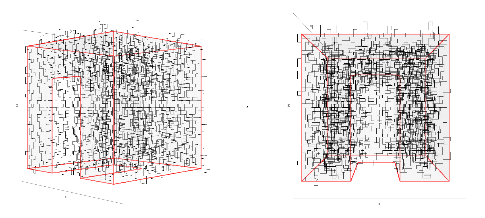
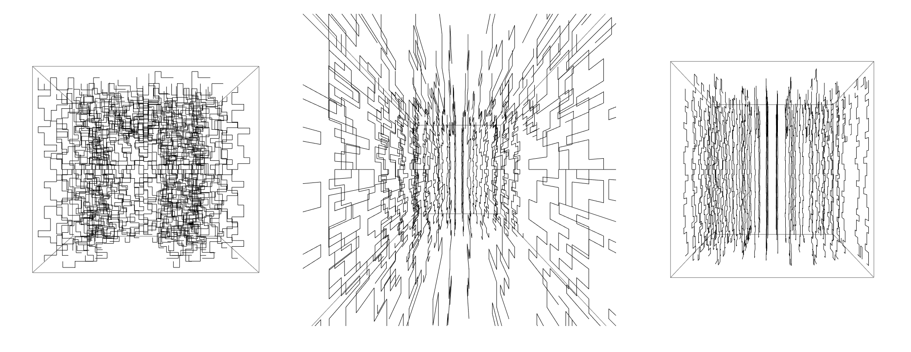
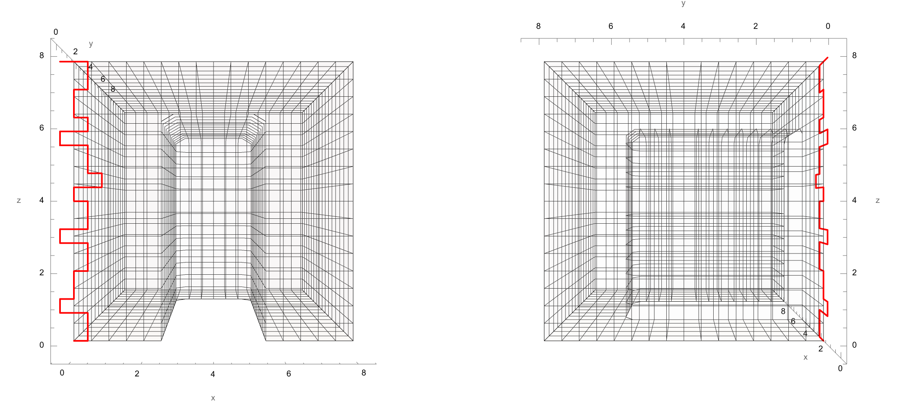

map
24 Sep 2025


23 Sep 2025
Notes from meeting with Adela:
- threads/fraying of fabric is nice, keep "imperfections" so that the pattern looks "perfect"/concrete from a distance but softer up close
- different types of rigor (perhaps less academic/mathematical rigor, but still artistic rigor in precise folds, systematic approach, etc.)
- conceptually: physical manifestation of an abstract idea (which reveals an implied split between mind and body)
- ...we always try to split things into opposites (e.g., abstract/concrete)
- this work is a proof/example that new (mathematical) knowledge can come in many forms (i.e., mind or body) --> pedagogy
- building the sequence is a conscious process of bodily learning (in contrast to rote repetition, like in an assembly line)
- use 2D pieces to create something 3D by accumulation (neater/nicer than random wire attempt)
- a pattern inside a pattern inside a pattern... "it's meta but it's not meta because it is the same thing" (me: "yes!!")
- references/connections:
TODOs
- continue making-thinking :)
- experiment with materials at scale
- choose rules in computer model, explore how rules create the architecture
21 Sep 2025
Update : back-and-forth
- a game of catch
- a tossing and turning
- between disciplines
- strange loops
- practice, play, movement
- teaching, learning, creating, thinking, making == looping
- CBTWYSINTSANHL
proposed research questions
How can repeated back-and-forth gestures accumulate into new knowledge?
How can embodying math develop mathematical understanding beyond academic rigor?
What is the interplay between constraint and expression in mathematical and artistic practices?
these ideas might be good eventually
- write another Accumulating Kolakoski poem to start/end thesis with the same structure
- enormous Venn diagram with intersections magnified (hyperbolic?) to emphasize connected > separate
Installation planning (in progress)

18 Sep 2025
Notes from class discussion: defining "research-creation"
- definition take 1: “only knows the conditions of its existence from within its own process” (Manning), i.e., can’t define it in specifics
- definition take 2: dynamic combination of thinking and making (i.e., philosophy and art), where each informs the other and the output is further inquiry
- "insertion of voices and practices into the academic everyday that work to trouble disciplinary relays of knowledge/power, allowing for more creative, sensually attuned modes of inhabiting the university" (Loveless)
- “reframing how knowledge is practiced beyond typical forms of academic use-value, including the value we place on linguistic expression and language-based evaluation” (Manning)
- “we live in a world that privileges forms of perception where the part can quickly and easily be singled out from the whole” (Manning) ← what can be gained by releasing this?
art = creating new (ways of) knowledge
- blend research/creation, thinking/making, mind/senses
- academia offers "legitimacy"... what do we want to take from academia?
what do we want to resist? what do we want to bring?
art/research emphasizes:
- process
- interdisciplinarity
- collective/public communication
- sensory experience > rigorous expertise
- questions > answers
in-class assignments
TODO (thesis)
- write, write, write
- refine research question(s)
TODO (general)
- test varnishes/laser-tape method for wall book
- make and document learn/teach/forget bean cage
- collaboration gesture - ???
16 Sep 2025
Notes from meeting with Mariela:
- what behaviors will the installation trigger?
- do you want the audience to observe it? touch it? reshape it?
- include puzzles/toys within the installation
- concept: tiny things coalesce into a structure/system
- relate (in writing) trash materiality to concept of feedback loop/circularity
- consider sound -- perhaps a subtle murmur

General notes:
- understanding the Kolakoski sequence = reading it in two ways at the
same time (terms & blocks, recipe & result)
- the installation may be beautiful and poetic, but how to point to the math?
- (Mariela's advice: think about what the audience will do)
- interpret Kolakoski with morse code?
TODO for thesis:
- start writing !!!
- subtle sound?
- read Borges on math
- build scale model + installation plan
TODO in general:
- collaboration assignment (SS, 9/22)
- submit mathematical poetry (9/24)
- rock for a teacher experiment (PP, 9/26)
- learn/teach/forget assignment (PP, 10/2)
- speculative syllabus (PP, 10/16)
- source paint/tape/metallic marker for wall book (mid-Oct)
- teaching statement
11 Sep 2025
Notes from Sam as "devils advocate":
(Also posted in Are.na)
- ok, but what about it?
- how to incorporate self-referential loops/other theory visually?
- can the vague/minimal visual be steered in a specific direction?
- i.e., instead of randomness
- contrast/mix of exact math and messy language (also music?)
- make more grounded, inviting, contextual, connected to the world
notes to self:
- to me, the math/process is the grounding element (relative to "art"/concepts);
constraint, small rules, base cases, tangible physicality... these all ground abstract
math concepts (which may settle in the periphery while the physical work preoccupies you)
- I really like this devil's advocate/sharing in pairs format! recreate (with a CFU to clarify "devils advocate")
- potential writing topic: loops & landing (have I landed (conceptually) in the perfect places?
have I crafted my arrivals? have I built myself around where I have landed? chicken/egg of inspiration)
- should I start with an example or with a broad concept? loop between them! (I can start at either, they loop, they drive eachother)
TODOs from Sam:
- read college Kolakoski paper
- explain a system without using any words
Reminder from Mariela:
The thesis is a research project, not trying to solve an art project.
References offered during presentation:
9 Sep 2025
Idea for thesis structure: series of poems/essays that alternate to mimic
the Kolakoski sequence
- (1) poem - compliance
- (2) essay - constraint & uncertainty
- (2) essay - intro to Kolakoski sequence
- (1) poem - accumulating Kolakoski
- (1) poem - TBD
- (2) essay - strange loops & hierarchies
- (1) poem - TBD
- (2) essay - TBD
- (2) essay - teaching math
- (1) poem - TBD
tossing back and forth, trying to explain each other, open/unsolved question
what they converge to (ratio of math/art? poem/prose?)
structure requirements (from D+M writing guidelines):
Notes from meeting with Adela:
- constraints are always there; our beings/ideologies are constraints;
the constraints I am naming are small
- does mathematical proof definitively end speculation in a way not possible in other sciences?
- how can the materiality of the thesis sculpture connect to themes of pedagogy/engagement/nurturing/love?
how to invite people in?
- TODO: start experimenting with 3D sculpture/scale using wire
4 Sep 2025
This is a research semester. The goal is to build a continuous body of work
that will become a thesis (and to evaluate how/if to incorporate existing work).
The written part of the thesis will be (mostly) complete by the end of this semester;
the Spring semester is for final touches.
- find a balance of research, writing, and prototyping
- the thesis need not be an academic paper; it should be part of the art
TODO (short term):
- comment on 5 thesis maps in Are.na
- read D+M Writing Guidelines; review old theses
- prepare 10 min presentation of past work + thesis intentions for next Thursday
- keep documentation of thesis process, failures included [THIS WEBSITE IS IT]
TODO (semester):
- Biennial paintings
- Kolakoski line textile/installation
- letterpress Your Choice covers
- teaching design/prep
- penplot cipher drawings
- consider who will serve on thesis committee
Motivation
This is where I will review my handwritten notes from meetings/crits/classes.
Reviewing/distilling the notes into key takeaways will help me process information
so I can make lasting connections. I'll call it "notes on notes."
Or maybe "A second pass," since the point is to go over my notes a second time
relatively soon after I've taken them, so they do not go forgotten.
Also, this is my "second pass" at starting at RISD, so I am celebrating second tries
(which are also first tries in their own way).
map